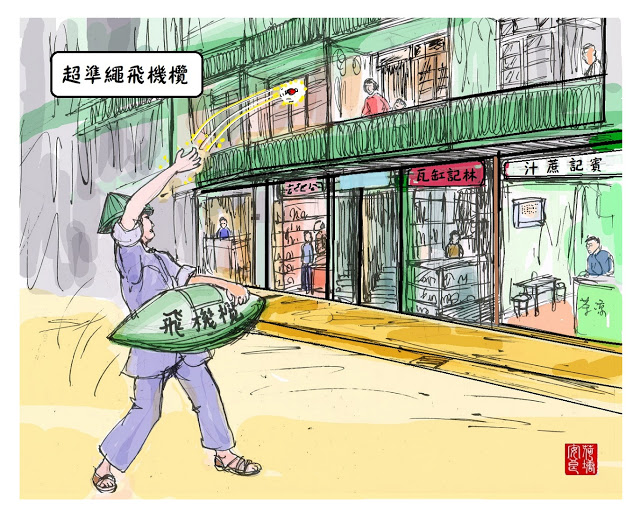

香港｜Hong Kong
港式西多士：四代演變
港式西多士，又稱「法蘭西吐司」，是從法式土司演變而成。早年人們為了不浪費食物...

港式西多士，又稱「法蘭西吐司」，是從法式土司演變而成。
早年人們為了不浪費食物，於是把吃剩而變得不新鮮的麵包，加入雞蛋煎至金黃色後又變得美味。其後法式土司更加入不同的調味料和水果，令法式土司成為可口的食物。
在法式土司在歐洲普及、香港成為英國殖民地後，採納了西方的飲食文化，從煎變成炸，法式多士演變成港式西多士。
早年人們為了不浪費食物，於是把吃剩而變得不新鮮的麵包，加入雞蛋煎至金黃色後又變得美味。其後法式土司更加入不同的調味料和水果，令法式土司成為可口的食物。
在法式土司在歐洲普及、香港成為英國殖民地後，採納了西方的飲食文化，從煎變成炸，法式多士演變成港式西多士。
第一代
在1950年代初的香港，茶餐廳賣的西多士並非現在的模樣，而是無餡料的。 烹飪方式也完全不一樣，過往只會用平底鑊煎煮，而非油炸。第二代
在五十年代初到六十年到十，港市西多士稍有變化，成為第一代有餡料的「咖央多士」。 以前正宗的西多士昂貴，所用的糖漿都是國外貨，所以在香港的飯店，或是大餐廳才有販售正宗法蘭西多士。 香港街邊茶檔或民間茶餐廳為了製作「法蘭西多士」，以咖央取代糖漿，蘸蛋漿再油炸，讓西多士的口味更加豐富，甜度恰當，而且咖央的價錢又較糖漿來的便宜。第三代
來到七、八十年代，當時香港經濟起飛，食材選擇較多及便宜，加上花生醬能黏着兩塊麵包，油炸時不易散開，做法方便，於是茶檔相繼仿效。 夾着花生醬的炸西多士，也成為現今最普遍的吃法流心西多士
時代轉變，西多士跟上潮流的步伐，近年香港更出現「流心西多士」，裡面的餡料為流砂奶黃餡。 如同「心太軟」一樣，切開西多士後，餡料爆漿流出。「保持防疫距離」的懷舊小食——飛機欖
飛機欖，本名是甘草欖，又名雞公欖、卜卜欖。透過小販丟上唐樓陽台、買家接住小食的形式販賣...

飛機欖，本名是甘草欖，又名雞公欖、卜卜欖。透過小販丟上唐樓陽台、買家接住小食的形式販賣。
最先出現於廣州，之後來到香港。由鮮白欖秘制，用鹽及甘草等藥材醃製而成，有些欖更會加上丁香、玉桂等，令白欖酸中帶甜，不易變壞，加上甘草味濃，有止咳、潤喉和戒煙功效。
在1950年代至1970年代，販售飛機欖的人斜背著欖型的容器，在街上沿途賣。因當時香港的唐樓高度有限，只有數層，因此買家從陽台扔錢給街上的小販，小販則扔飛機欖給買家，如放紙飛機，所以有飛機欖的別稱。
當時很多人會直接在陽台買飛機欖，為了讓居民知道飛機欖小販經過，小販揹著樂器，邊彈奏邊唱歌，讓屋內居民聽到飛機欖之歌後，出來陽台買，如雪糕車一樣。
郭鑒基（1924年-2013年12月9日），在香港被稱為「飛機欖之父」，據說在他14歲時，從掟（丟）石頭取得靈感，與三名友人合夥買入當時流行廣州小食「欖子」。 1970代的高峰時期，他每天做2小時就拋約200份（大約10斤）的飛機欖。
後來，因為新建飛機場、香港居住資源缺乏，樓屋越蓋越高，以前的低矮唐樓漸漸拆卸，飛機欖也逐漸步入歷史，不再街頭上聽到飛機欖叫賣的歌聲。
最先出現於廣州，之後來到香港。由鮮白欖秘制，用鹽及甘草等藥材醃製而成，有些欖更會加上丁香、玉桂等，令白欖酸中帶甜，不易變壞，加上甘草味濃，有止咳、潤喉和戒煙功效。
在1950年代至1970年代，販售飛機欖的人斜背著欖型的容器，在街上沿途賣。因當時香港的唐樓高度有限，只有數層，因此買家從陽台扔錢給街上的小販，小販則扔飛機欖給買家，如放紙飛機，所以有飛機欖的別稱。
當時很多人會直接在陽台買飛機欖，為了讓居民知道飛機欖小販經過，小販揹著樂器，邊彈奏邊唱歌，讓屋內居民聽到飛機欖之歌後，出來陽台買，如雪糕車一樣。
郭鑒基（1924年-2013年12月9日），在香港被稱為「飛機欖之父」，據說在他14歲時，從掟（丟）石頭取得靈感，與三名友人合夥買入當時流行廣州小食「欖子」。 1970代的高峰時期，他每天做2小時就拋約200份（大約10斤）的飛機欖。
後來，因為新建飛機場、香港居住資源缺乏，樓屋越蓋越高，以前的低矮唐樓漸漸拆卸，飛機欖也逐漸步入歷史，不再街頭上聽到飛機欖叫賣的歌聲。
香港大學拼錯自己的英文名字？
The University of Hong Kong，是香港第一學府。但在港大的東閘區域，流傳著一個都市傳說...

香港大學，The University of Hong Kong，是香港第一學府。但在港大的東閘區域，流傳著一個都市傳說…
在東閘更東的道閘上，上面寫著的，是 VNIVERSITY OF HONG KONG ，而非U字開頭的 UNIVERSITY。為何港大會把U弄成V呢？是不小心弄錯了，懶得換嗎？
其實U字曾經懸掛在道閘上，只是常常無緣無故掉下來。
在道閘對面的是英皇書院，相傳在日軍侵華期間，那時是用來處刑的地方。有留意英皇書院整棟建築，你就會發現有很多圓拱形 那是以前用來把人活生生吊死的
日軍撤退後那裏仍聚集了大量冤魂，而港大閘上的 UNIVERSITY OF HONG KONG的 U 字，因為外形與圓拱形極度相似，而聚集大量亡魂和怨恨。 因為亡魂的聚集，重量過重，所以 U 字無論怎樣掛上去，第二天總會發現跌了下來。 為了避免U字一直掉下來 ，港大乾脆直接換成V字，從此，東道閘上的字母再也沒有無緣無故地掉下了。
在東閘更東的道閘上，上面寫著的，是 VNIVERSITY OF HONG KONG ，而非U字開頭的 UNIVERSITY。為何港大會把U弄成V呢？是不小心弄錯了，懶得換嗎？
其實U字曾經懸掛在道閘上，只是常常無緣無故掉下來。
在道閘對面的是英皇書院，相傳在日軍侵華期間，那時是用來處刑的地方。有留意英皇書院整棟建築，你就會發現有很多圓拱形 那是以前用來把人活生生吊死的
日軍撤退後那裏仍聚集了大量冤魂，而港大閘上的 UNIVERSITY OF HONG KONG的 U 字，因為外形與圓拱形極度相似，而聚集大量亡魂和怨恨。 因為亡魂的聚集，重量過重，所以 U 字無論怎樣掛上去，第二天總會發現跌了下來。 為了避免U字一直掉下來 ，港大乾脆直接換成V字，從此，東道閘上的字母再也沒有無緣無故地掉下了。